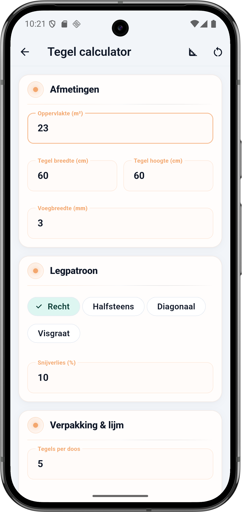
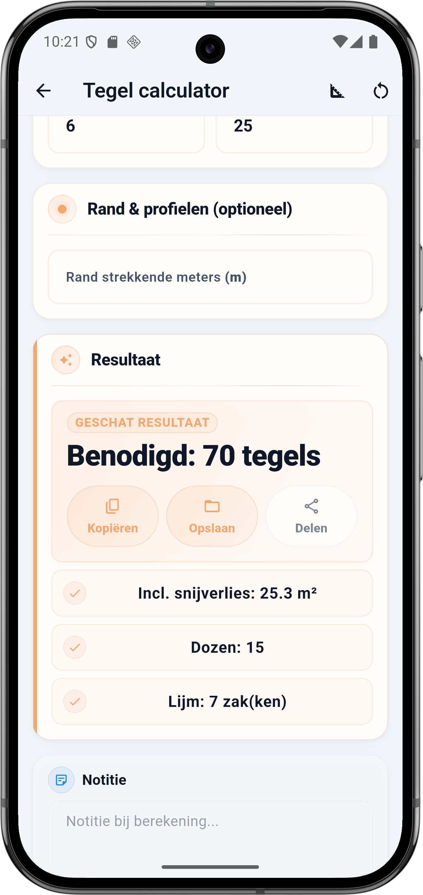

Wat vraagt de calculator
De Tegel calculator heeft vier blokken: Afmetingen, Legpatroon, Verpakking en lijm, en de optionele Rand en profielen. Elk veld hieronder komt één-op-één overeen met de app.
Afmetingen
- Oppervlakte (m²) — de netto te leggen oppervlakte. Trek grote vaste objecten eraf (ligbad, douchebak). Een klein stopcontact of toilet-afvoer negeer je — dat zit in het snijverlies.
- Tegel breedte en hoogte (cm) — bijvoorbeeld 60 × 60, 30 × 60, 15 × 15 voor wandtegels of 80 × 80 voor XL. De calculator rekent dit om naar m² per tegel.
- Voegbreedte (mm) — standaard 2 tot 3 mm voor keramiek, 5 mm voor natuursteen of rustieke tegels. Beïnvloedt het aantal tegels marginaal en is cruciaal voor de voegspecie-berekening.
Legpatroon
- Recht — tegels precies boven elkaar. Minste snijverlies. Standaard 10%.
- Halfsteens — om en om verspringend (klassiek metselverband). 10 tot 12% snijverlies.
- Diagonaal — 45 graden gedraaid. Snijden op elke rand, 15 tot 20% snijverlies.
- Visgraat — de meest complexe leg. 20 tot 25% snijverlies, soms meer bij XL tegels.
- Snijverlies (%) — stel zelf in op basis van patroon en formaat. Grote tegels in een lastige vorm: hoger. Rechte muur zonder obstakels: lager.
Verpakking en lijm
- Tegels per doos — staat op de doos. Voor 60 × 60 tegels meestal 4 of 5 stuks per doos.
- Lijm per m² (kg) — vuistregel: dunbed 4 kg, standaardbed 6 kg, dikbed voor onvlakke ondergrond 8 tot 10 kg per m².
- Zak lijm (kg) — meestal 25 kg per zak, soms 20 kg.
Rand en profielen (optioneel)
- Rand strekkende meters (m) — totale lengte waar je afsluitprofielen gaat plaatsen (bijvoorbeeld bij een douchehoek). Alleen invullen als je profielen bestelt.
💡 Snijverlies per patroon
Recht is de veiligste leg, visgraat de duurste. Grote tegels (60×60 of groter) in een ruimte vol hoeken? Ga altijd 2 procentpunt boven je vuistregel zitten — één verkeerd gesneden XL tegel is al snel een halve doos verlies.
De formule onder de motorkap
Tegels is in de kern: oppervlakte plus snijverlies, gedeeld door de m² die één tegel beslaat. Daarna rondt BuildExact dozen en lijmzakken naar boven af omdat je nooit een halve doos koopt.
Rekenvoorbeeld — vloer 23 m² met 60×60 tegels
Dit is de situatie uit de screenshot: één vloer van 23 m², keramische 60×60 tegels, 3 mm voeg, rechte leg met 10 procent snijverlies. Dozen van 5 stuks, standaardbed lijm 6 kg per m², zakken van 25 kg.
Invoer
| Veld | Waarde |
|---|---|
| Oppervlakte | 23 m² |
| Tegelformaat | 60 × 60 cm |
| Voegbreedte | 3 mm |
| Legpatroon | Recht |
| Snijverlies | 10 % |
| Tegels per doos | 5 |
| Lijm per m² | 6 kg |
| Zak lijm | 25 kg |
Berekening stap voor stap
- 23 m² × 1,10 (10% snijverlies) = 25,3 m² totaal te leggen
- Eén tegel 60 × 60 cm = 0,60 × 0,60 = 0,36 m² per tegel
- 25,3 ÷ 0,36 = 70,28 → afgerond 70 tegels
- 70 ÷ 5 tegels per doos = 14 dozen; BuildExact rondt af op 15 dozen om een reserve-tegel ingekort tekort op te vangen
- 25,3 m² × 6 kg = 151,8 kg lijm; 151,8 ÷ 25 = 6,07 → afgerond 7 zakken
Resultaat
| Onderdeel | Waarde |
|---|---|
| Benodigd aantal tegels | 70 |
| Incl. snijverlies | 25,3 m² |
| Dozen | 15 |
| Lijm | 7 zakken |
70 tegels is het benodigde aantal, maar je koopt altijd per doos — dus 15 dozen (75 tegels). De 5 overgebleven tegels zijn goud waard: bewaar ze voor toekomstige reparaties, want een nieuwe productiecharge heeft bijna altijd een iets afwijkende kleurnuance.
💡 Bewaar één doos reserve
Zelfs als je snijverlies perfect uitkomt, houd één hele doos achter de hand voor toekomstige reparaties. Een gevallen schaar, een krap gezaagde leiding — binnen 2 jaar verdwijnt jouw serie uit het assortiment van de bouwmarkt. Die ene doos extra in de meterkast kost minder dan een halve zaterdag zoeken naar een vervanging.
Legpatroon vergelijken
Zelfde oppervlakte, zelfde tegel — alleen het patroon verandert het aantal tegels dat je nodig hebt. Op 23 m² met 60×60 tegels zie je dit:
| Patroon | Snijverlies | Totaal m² | Tegels |
|---|---|---|---|
| Recht | 10 % | 25,3 | 70 |
| Halfsteens | 12 % | 25,8 | 72 |
| Diagonaal | 17 % | 26,9 | 75 |
| Visgraat | 22 % | 28,1 | 78 |
Lijkt klein, maar reken het door: visgraat kost in dit voorbeeld 8 tegels meer (bijna 2 dozen) dan recht. Bij XL-tegels of een dure natuursteen loopt dat snel op tot 100 euro verschil puur door legkeuze.
Zo doe je dit in BuildExact
- Open de Tegel calculator onder Materialen. Je ziet meteen 'Afmetingen' bovenin.
- Vul oppervlakte, tegel breedte en hoogte in en kies de voegbreedte. Voor keramiek 2 of 3 mm, voor natuursteen 5 mm.
- Kies legpatroon en pas snijverlies aan — standaard 10 voor recht, 20 of hoger voor visgraat.
- Vul verpakking en lijm in: tegels per doos staat op de doos, lijm per m² op de zak. Dunbed 4, standaard 6, dikbed 8 tot 10 kg.
- Optioneel: strekkende meters rand voor afsluitprofielen. Daarna bewaar als project of deel vanuit de resultaatkaart.
Veelgestelde vragen
🟫 Reken je tegels in BuildExact
Gratis in de app. Reken, bewaar als project, zet om in een offerte-PDF met je logo — allemaal zonder opnieuw te typen.
Gratis downloaden